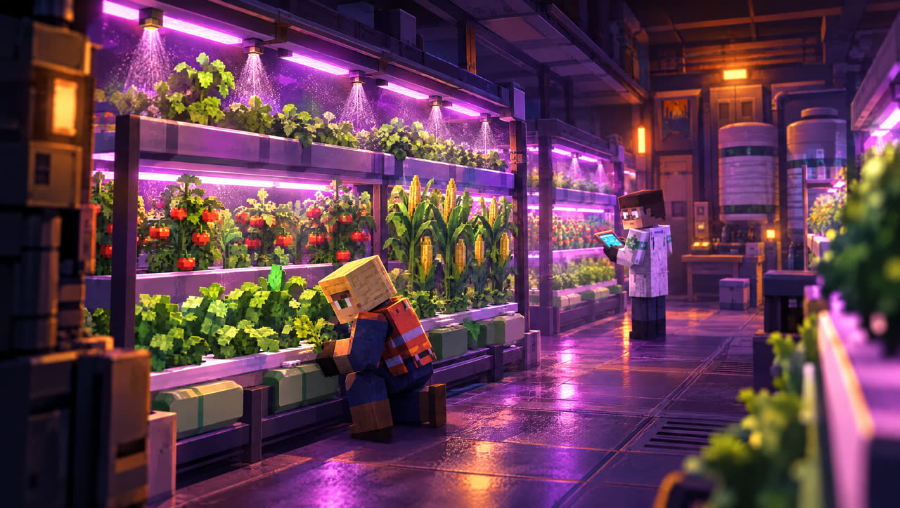

1. The core loop
One morning the sun changed: the ozone layer tore open in three weeks and daylight became deadly. The survivors took refuge in metro tunnels and mine shafts. You are the leader of one of these shelters.
The game is built from two interlocking loops:
Night: the surface
Ride the elevator up, loot crates and buildings, fight or flee from enemies, and get back to the elevator before dawn.
Day: underground
Use what you brought back to dig rooms, put your people to work, craft, research, grow the colony and prepare for attacks.
Resources keep accumulating while you're on the surface and even while the game is closed. Every raid grows the colony, and a growing colony prepares you for harder raids.

2. The first night, step by step
- Go up: the GO TO SURFACE button in the shelter spends one ticket and takes you up by elevator.
- Head for crates: walk to glowing crates; looting starts automatically when you get close. Filled bag slots appear at the top left.
- Watch the clock: the timer at the top shows how long until dawn. Get back before it runs out.
- Return to the elevator: if you make it back alive, everything in your bag goes to the colony and any gear you found goes to storage.
- Spend it in the shelter: dig a new room with scrap and assign idle people to work.
3. Night raids

Tickets and short patrols
- Every trip to the surface costs 1 ticket. Tickets refill over time and stack up to 4.
- The Raid Prep Room refills tickets faster. Quests and goals also reward tickets.
- Out of tickets? Go on a short patrol: no ticket needed, but loot is halved and rare crates don't spawn.
Dawn and the sun
- When the sun rises, everything left in the light burns: your health drains second by second.
- Stay in building shadows and run to the elevator from shadow to shadow. Making it back at dawn grants bonus loot.
- Headgear (welding goggles, sun veil, thermal helmet), the Shield Room and the Sun Shield crafted in the Lab reduce sun damage.
- The sun burns mutants too; they flee into the shadows at dawn. Robots, however, are immune to the sun.
Bag, Safe Pouch and fainting
- Loot goes into bag slots. Bigger bags (backpack, military bag) and the Broad Back skill add slots.
- Safe Pouch: its contents are never lost, even if you faint. Put your most valuable materials here.
- If your health runs out, you faint: you lose half of your bag and all items found that night. The leader then rests for a while; the Infirmary shortens it.
Map, fog of war and the horde
- The map is at the top right. Places you walk through are revealed; everything else stays under fog, and you can't see enemies inside it.
- At certain moments of the night, a horde emerges from the map edge and marches toward you. When the warning comes, head for shadows, a building or the elevator.
- Vehicle: parked on a road somewhere on the map. REPAIR at the hood, ADD FUEL at the back, GET IN at the door. It's fast and runs over mutants, but the engine noise attracts enemies.
Crates, buildings, the smelting furnace, survivors
Rare crate
A heavy safe with a golden glow. Drops parts, blueprints and good gear; usually guarded.
Enterable building
Hospital, school, factory… Inside are lockers and a locked room opened with a keycard, holding the best loot.
Makeshift smelting furnace
Melts scrap from your bag (3 scrap → 1 ingot). Smelting makes noise and light; nearby enemies will come.
Survivor
Someone trapped. Defeat the guard, free them and return to the elevator together: they join your people.
Night conditions
After a few raids, about half of all nights come with a special condition. It's shown in advance on the expedition panel:
| Condition | Effect |
|---|---|
| Foggy night | Short sight, haze everywhere; mutants notice you 30% later · loot +15% |
| Full moon | Mutants 15% faster and see farther · +1 rare crate |
| Quiet night | 30% fewer enemies · loot −15% |
| Crimson night | 30% more enemies · loot +40% |
Weekly storms and night events (e.g. Golden Night, Blood Moon) also change the rules. Every region has a boss night.
4. Regions
Four regions unlock in order. At the edge of each region is a region gate leading to the next: a yellow gate is repaired with a kit crafted in the Lab, a green gate can be passed through.
| Region | Identity | Boss |
|---|---|---|
| I · Ruins | A suburb sinking into desert sand. Every colony starts here. | Ash Giant |
| II · Abandoned City | Shopfronts and dead neon: the mutants' city. | Molten Giant |
| III · Military Base | Sandbags, watchtowers, robot patrols. Electronics and power cells are here. | War Robot |
| IV · Spaceport | Rusted docks, sealed hangars and the last colony shuttle. | Orbital Warden |
Defeat the boss to clear the region and earn rare gear. Finish the Spaceport without fainting to unlock Nightmare tiers (up to 10): stronger enemies, richer loot.
5. Enemies

Mutants: those who stayed in the light and didn't die
| Enemy | Behavior | How to deal with it |
|---|---|---|
| Burnt mutant | Roams at night and follows sound; flees to the shadows at dawn. | Move quietly; lure it elsewhere with a flare. |
| Runner | The fastest, but fragile. | You can't outrun it: wait at a corner and strike when it closes in. |
| Tank mutant | Huge, slow, three times tougher; hits hard if it catches you. | Easy to escape, costly to kill: think about your ammo. |
| Spitter | Spits acid from range and backs off when you approach. | Get behind a wall or rush it: it's weak up close. |
| Exploder | Full of gas; explodes when it reaches you or dies. | Shoot from range and pop it next to other enemies. |
Robots: the soldiers of the ships
| Enemy | Behavior | How to deal with it |
|---|---|---|
| Watcher robot | Flies and doesn't attack, but sounds the alarm when it sees you: every enemy nearby comes. | Shoot it before entering its sight, or go around. |
| Guard robot | Guards the Base and the Spaceport. The cone in front of it is its field of view. | When the red line lights up, a laser is coming: dodge sideways. Silence it with EMP. |
| Dawn robot | Immune to the sun; drops in from the map edge at dawn. | Ignores flares. Drops electronics when destroyed. |
6. Weapons and gear

There are four gear slots: weapon, headgear (against the sun), bag (slots) and charm (lucky charm: loot · heart locket: health · wind feather: escape).
| Weapon | Type | Note |
|---|---|---|
| Crowbar, Machete, Sledgehammer | Melee | Uses no ammo. |
| Pistol | Firearm | Pistol ammo; your starting weapon. |
| Shotgun | Firearm | Three pellets per shot; devastating up close. |
| Crossbow | Firearm | Silent, long range: doesn't wake enemies. |
| Hunting rifle | Firearm | Long range, one heavy shot; rare ammo. |
| Machine gun | Firearm | Automatic fire; eats ammo. |
- Rarity: Common · Rare · Legendary. Rarity and upgrade level raise both damage and durability.
- Ammo: every firearm uses its own ammo; out of ammo, it strikes with the stock.
- Durability: drops with every attack and the weapon breaks at zero. Repair it in the Lab.
- Return alive and found gear goes to storage; faint and it's lost.
Consumables (quick item slots)
Two slots around the ATTACK button hold consumables; tap » to switch items.
| Item | Effect |
|---|---|
| Signal flare | Lures mutants into the light (robots aren't fooled). |
| Grenade | Delayed blast with area damage; the noise wakes distant enemies. |
| EMP bomb | Silences robots for 6 seconds: no shooting, moving or alarms. |
| Smoke bomb | Enemies lose track of you for 5 seconds: made for escaping. |
| Syringe | Instant +40 health. |
| First aid kit | Instant +100 health. Hard to craft: requires Lab Lv3 and an Infirmary. |
Before a raid you can pick a raid meal from your farm produce (soup, milk and eggs, meat stew, fruit) for bonus health, damage or speed.
7. Shelter and rooms

The shelter has 3 floors (144 rooms in total) and a population cap of 200. Walk into an earth wall to dig a room; adjacent rooms of the same type merge into a hall. Every room can be upgraded, and a room without workers produces nothing.
| Room | What it does |
|---|---|
| Generator | Produces energy. Without energy, production stops. |
| Solar Panel | Free energy by day, nothing at night. |
| Battery | Raises the energy cap; stores daytime energy for the night. |
| Water Purifier | Produces drinking water. |
| Water Tank | Raises the water cap. |
| Greenhouse | Vegetables; wheat and fruit (unlocked with seeds). |
| Barn | Cows and goats: milk and meat. Drinks water, yields more food than the Greenhouse. |
| Coop | Chickens: eggs and meat. Drinks little water. |
| Mess Hall | Cooks reduce consumption; with all four food sources, balanced meals boost morale. |
| Cold Storage | Raises the food cap and slows spoilage. |
| Main Storage | Adds slots to the storage grid and capacity to the scrap cap. |
| Dormitory | Adds beds: room for the population to grow. |
| Ventilation | Air for 12 people per level. |
| Climate Control | Keeps the shelter in the 16–26°C comfort range. |
| Infirmary | The wounded heal faster; shortens the fainted leader's rest. |
| School | Trains people and raises mastery (★5 only in the School). |
| Lab | All crafting: ammo, consumables, gear, repairs, upgrades, research. |
| Barracks | Soldiers: they hold the entrance during attacks and join you on raids. |
| Shield Room | Reduces sun damage on the surface. |
| Raid Prep Room | Refills tickets faster. |
| Radio | Picks up signals from new regions and decodes radio logs. |
Resources
Water · Food · Energy
The vital three. If one runs out, morale drops first, then health.
Scrap
Digging, upgrades, repairs. From the surface and from expeditions.
Parts · Electronics
Parts from rare crates; electronics from robots. Weapon upgrades, gates, the vehicle.
Ingots · Fuel
Ingots come from the furnace and go into crafting. Fuel powers the vehicle and boosts generators.
Power cell
The most valuable: rare crates at the Base and Spaceport, the robot boss. Needed for the Spaceport gate and the shuttle.
Crystals · Tickets
Crystals are for looks and cosmetics only; power is never sold. Tickets are your right to go up.
Food chain
- The Greenhouse grows vegetables, wheat or fruit. Wheat feeds animals (+20%), fruit boosts morale.
- Herds in the Barn and Coop breed while there's water and food and a keeper is working. SLAUGHTER gives meat instantly; PET the herd leader once a day (+10%).
- Harvests pile up in the room; tap to collect. Seeds come from the surface into storage, and the Greenhouse uses what's stored.

Life support: air and temperature
- The elevator shaft provides air for 10 people; beyond that you need Ventilation (12 people per level).
- By day the sun and generators warm the shelter; at night it cools. Climate Control keeps it at 16–26°C.
- If conditions slip, morale drops first, then production, and finally health.
8. People and colony management
Every colonist has a name, a personality and a separate mastery (★1–★5) for each job. A master produces twice as much as a ★1. Working the same job earns stars over time (up to ★4); ★5 requires the School. Move someone to another job and they're a beginner there.
- Colony › MANAGEMENT: set sector priorities (Off / Low / Normal / High). A vital resource running short automatically becomes URGENT. You can also pin a person to a room.
- Morale: affected by food variety, living conditions, events and decisions; low morale cuts production.
- Personal wishes: colonists sometimes ask for something (a toy, a keepsake, a book…). Fulfil them for stars, morale and crystals.
Families and generations

- Colonists form couples and have children; children start working when they grow up.
- Everyone ages one year per game year; the first generation grows old over time, and elders become less productive.
- A loss leaves grief behind; the memorial wall remembers those who are gone.
Crises and decisions
When something happens in the colony (famine, migrants at the gate, an epidemic, a morale collapse, the aftermath of an attack), a decision card with two choices appears. As the colony grows, generational decisions come too: should children work or study, should elders retire, how to prepare for winter. Every decision has a price, and its effect lasts for a while.

Seasons
Each season lasts 8 game days, and a year is 32 days. Seasons have no effect in the first week, then grow stronger over time.
| Season | Effect |
|---|---|
| Spring | Water +15%, food +10% |
| Summer | Water −15%, food +10% |
| Autumn | Food +25%, raider attacks are stronger |
| Winter | Food −20%, stronger hordes, frequent epidemics; heating costs scrap or energy |
9. Shelter defense

As the colony grows, the shelter gets attacked. A warning starts, the siren sounds and the attackers come down the elevator.
| Attack | Weak point |
|---|---|
| Horde | Gets stuck at walls: Defense Wall and Shield Room. |
| Raiders | Weak against soldiers; full storage attracts them. |
| Robots | Radar and the Lab disrupt them. |
- Entrance guard: soldiers meet attackers at the entrance room first; when one falls, a reserve comes from the Barracks.
- SOLDIERS AUTO: if your defense is below the expected attack, the game assigns soldiers to the Barracks automatically (can be turned off).
- With the DEFEND! button the leader joins the fight; every hit adds to your defense.
- If your defense is double the attack, it's repelled at the gate. Lose several in a row and attacks become less frequent.
10. Crafting, blueprints and research
- The Lab splits crafting into four tabs: WEAPONS · AMMO · GEAR · TOOLS & SUPPLIES. New recipes unlock as it levels up.
- Blueprints: most weapons, gear, ammo and consumables need a blueprint first. Blueprints drop from rare crates into your inventory; tap › LEARN. Kits and the Sun Shield need no blueprint.
- Research unlocks permanent upgrades (e.g. auto-harvest). Research points accumulate in the Lab.
- A caravan visits now and then: trade at the elevator room.
11. Progression
The journey bar on the quests screen shows the big goal: Ruins → City → Base → Spaceport → Shuttle → Finale → New World. Daily and weekly quests, a 7-day login streak and achievements reward you along the way.
Leader level and skills
Raids level up your leader. Every 5 levels grants 1 skill point; there are 8 skills with 3 tiers each. You can't take them all, so choose your style; respeccing is free.
| Skill | Effect (grows per tier) |
|---|---|
| Silent Step | Mutants notice you only from closer. |
| Quick Hands | Crates open faster. |
| Tough | More health on the surface. |
| Marksman | More weapon damage. |
| Runner | Faster running. |
| Thrifty | Some shots use no ammo. |
| Broad Back | Adds inventory slots. |
| Scavenger | More crate loot. |

Mega projects
Colony › PROJECTS: turn surplus resources into permanent power. Only one stage progresses at a time and each stage takes longer; after 5 stages, Master levels begin.
Water Tower
More water and a bigger water tank.
Fusion Reactor
More energy for every room.
Hydroponic Dome
More food, happier people.
Defense Wall
Against attacks, especially hordes.
Radar Network
Sees attacks coming and disrupts robots.
The shuttle, the final night and the New World

The robots sealed the last colony shuttle at the Spaceport and scattered its fuel cells across the port. Collect the power cells, repair the shuttle and launch it on the final night: the pioneers set out for a habitable planet.
Afterwards you can migrate with your colony to a New World whenever you like. Everything starts from scratch, but Legacy points, crystals, robots, looks and Nightmare tiers come with you. Spend Legacy points on permanent perks; every new world has its own rules.